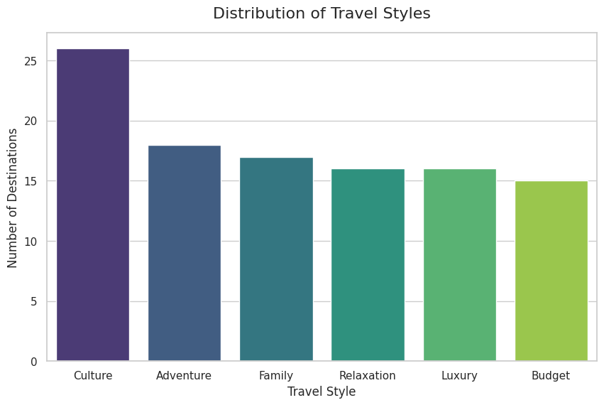
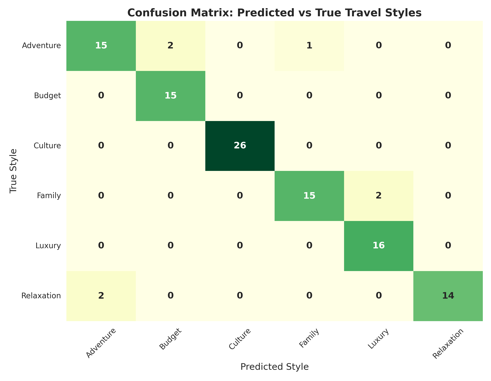
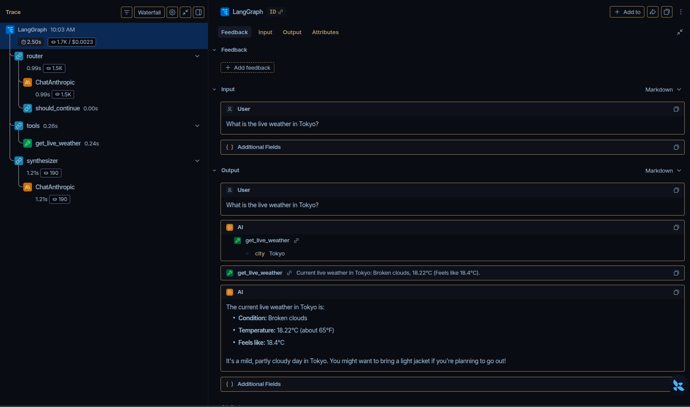

A LangGraph-Powered Two-Model Architecture
Building a robust destination database from scratch required rigorous preparation.
Standard datasets lack the nuance required for high-quality LLM context.

Before the LLM generates prose, we mathematically predict the user's optimal travel style.

To give the agent instant access to destination knowledge, we built an optimized Retrieval-Augmented Generation pipeline.
The routing agent (Claude 3.5 Haiku) is equipped with three critical tools it can trigger autonomously:
Fetches real-time meteorological data for dynamic itinerary adjustments.
Triggers the Random Forest model to analyze the user's parameters.
Queries the local Vector DB to retrieve mathematically relevant locations.

Full observability into the Two-Model architecture:
Fully authenticated backend. Chat histories are securely encrypted and tied strictly to user JWT sessions in PostgreSQL.
From the Everforest React UI to the LangGraph Engine...
Any Questions?
github.com/bmislol/smart-travel-planner